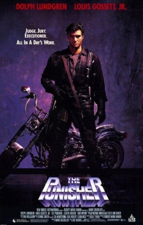

#2714 Der Punisher
 gesehen am 05.12.2015
gesehen am 05.12.2015
 
 IMDB-Wertung: 5.7 / 10
IMDB-Wertung: 5.7 / 10  Metascore: 0
Metascore: 0 
Based on the Marvel Comic, Dolph Lundgren is Frank Castle an ex-cop who lives in the sewers and acts as judge, jury, and executioner to the city's criminals in retaliation for the unpunished murders of his wife and kids. Frank's ex-partner Jake (Louis Gossett Jr.) finally catches up with the vigilante as he tries to stop the Japanese mob, which is trying to take over the city's mafia operation.
Jahr: 1989
Dauer: 89 Minuten
FSK: 18
Land: Australien Studio: Highlight FilmTonspuren: DD2.0 - ,
Untertitel:
Auflösung: 1080p (1920x1040) Größe: 7608 MB
Genre: Action, Thriller, Drama, Krimi
Regisseur: Mark Goldblatt
Drehbuch: Boaz Yakin
Soundtrack: Dennis Dreith
Darsteller:
 Dolph Lundgren als Frank Castle
Dolph Lundgren als Frank Castle Louis Gossett Jr. als Jake Berkowitz
Louis Gossett Jr. als Jake Berkowitz Jeroen Krabbé als Gianni Franco
Jeroen Krabbé als Gianni Franco- Nancy Everhard als Sam Leary
 Barry Otto als Shake
Barry Otto als Shake Todd Boyce als Terrone
Todd Boyce als Terrone- Lani John Tupu als Laccone
- Brooke Anderson als Annie Castle
- John Samaha als Elevator Repairman
 Donal Gibson als Bill
Donal Gibson als Bill Richard Carter als Cop
Richard Carter als Cop- Roslyn Gentle als Reporter
- Kim Miyori als Lady Tanaka
- Bryan Marshall als Dino Moretti
- Brian Rooney als Tommy Franco
- Zoshka Mizak als Tanaka's Daughter
- Kenji Yamaki als Sato
- Hirofumi Kanayama als Tomio
- Larry McCormick als TV Newsreader
- Gianfranco Negroponte als Musso
- Noga Bernstein als Ginny
- Emma Soloman als Ginny's Girlfriend
- Courtney Keiler als Sophia
- Emily Nicol als Cathy
- Cathy Stirk als Catarina
- Dominic Baudish als Dominic
- Robert Fraser als Robert
- James Klein als Nicholas
- Fotis Pelekis als Mario
- Christian Manon als French Leader
- Colin Leong als Cutter Captain
- Brian McDermott als O'Banion
- May Lloyd als Julie Castle
- Holly Rogers als Felice Castle
- Lois Larimore als Nanny
- Harry Weiss als Maitre D'
- Robert Simper als Danny
- Johnny Raaen als Joey
- Lawrence Woodward als Mickey
- Tom Coltraine als Peeing Man
- David Arnett als Joe
- Brett Williams als Tim
- Al Gockimen als Hood
- Colin Handley als Mafia Man
- Isao Hirata als Ito
- Ken Wayne als Bartender
- David Morris als Man in Bar
- Char Fontane als Laurie Silver
- Aku Kadogo als Reporter
- Steve Kuhn als Reporter
Datei: X:\FSK18-1900-1999\Punisher, Der (1989, FSK18, 1920x1040).mkv seit 05.12.2015
Festplatte: FSK18
 Es gibt insgesamt 108 Filme in der Gruppe 'FSK18-1900-1999'
Es gibt insgesamt 108 Filme in der Gruppe 'FSK18-1900-1999'